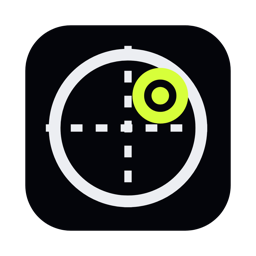
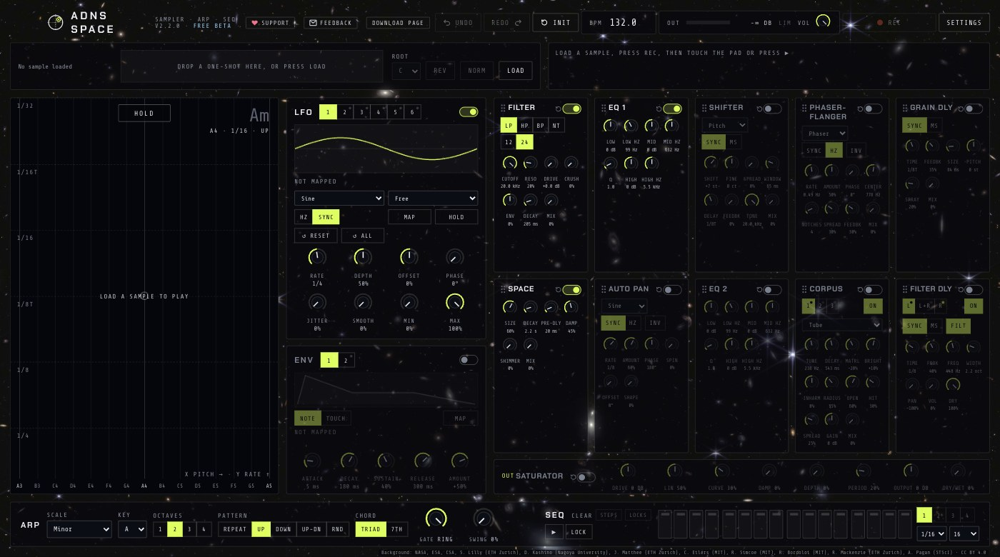

ADNS SPACE
Sampler · arp · sequencer
A one-shot sampler you play on an X-Y pad. Load a short sound, then click and drag: left to right picks the note in your key and scale, bottom to top picks the speed, and the arpeggiator plays it in time. The sequencer plays its own notes, up to 64 steps.

X-Y pad
Pitch on one axis, arp speed on the other. Hold keeps it playing when you let go.
Seven effects
Filter, EQ, shifter, phaser-flanger, grain delay, reverb and auto pan.
Six LFOs
Map any knob, or the pad itself, and let it move on its own.
64-step sequencer
A note on every step, and effect settings that change step by step.
Record & export
Every take is saved with its moves. Export 24-bit WAV or re-render with a new sound.
Install
ADNS SPACE isn't registered with Apple, so macOS asks you to allow each copy you download.
- Open the downloaded .dmg and drag ADNS SPACE onto Applications. Eject the disk image.
- Open ADNS SPACE from Applications. When your Mac says Apple could not verify it is free of malware, click Done.
- Open System Settings → Privacy & Security, scroll to Security and click Open Anyway next to ADNS SPACE.
- Enter your Mac password if asked. That opens the copy in Applications. macOS asks again if you open the app from the disk image, or if you download a new copy.
Updates: versions 1.2 and later tell you when a new version is out and can install it. Your saved takes are kept. macOS can still ask you to allow the new version.
Release notes
1.3.1
- Feature The green window button enters full screen and returns to the fixed size. Close and minimize still work.
- Fix A no-drag area keeps the window buttons clickable.
- Feature Releases in the top bar opens the download page.
- Feature Each take has a waveform you can click to play from that point.
- Feature Feedback opens an email.
- Feature The app checks for an update when you come back to it.
- Change The drag cursor is smaller.
- Change Takes sit one per row, and the saved count is gone.
1.3.0
- Feature Slide across sequencer steps to switch them. Clear Steps and Clear Locks ask first and work separately.
- Change The Mac window is a fixed 1400 × 700 and cannot be resized.
- Feature Knobs, BPM and steps use a drag cursor with the app logo.
- Feature An already-open app looks for an update every 10 minutes and notifies even when its window is in front.
- Fix Update checks use the renamed public download page, so a new version can be found.
1.2.0
- Fix After the first Open Anyway, the copy in Applications drops the download mark. Opening it from the disk image asks again, and so does a newly downloaded copy.
- Feature The app fills the window, with no black bars, and scales down to fit a small one.
- Change The window buttons sit in the top bar, which you drag the window by.
- Feature The app checks for a new version and can install it. macOS can still ask you to allow the new version. Saved takes are kept.
- Feature Support in the top bar opens PayPal.
- Change Export WAV is gone from the top bar. Each take has its own download.
- Change Six takes show at once in two columns, beside a fixed-width waveform.
- Change Clearer sample length, a smaller output meter with a limiter light, and an LFO hint that fits.
- Fix The top bar shows the real version.
1.1
- Feature The Mac app is available to download. It works on macOS 13 or later.
- Fix Export WAV keeps the audio until the Save dialog is done.
Support
ADNS SPACE is free. If you enjoy it, you can support it with any amount you like.
Support with PayPal